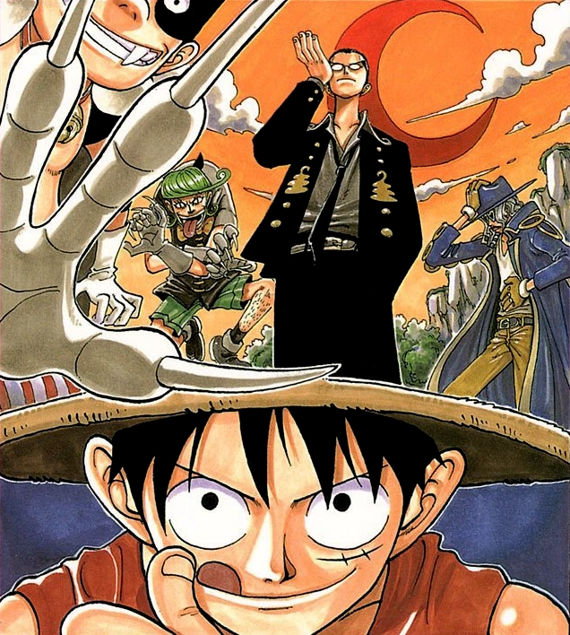

Luffy, Zoro and Nami arrive at Syrup Village looking for a ship, where they meet Usopp, the local village liar. After they learn of a secret plot against Usopp's friend Kaya, they decide they have no choice but to help him defeat Captain Kuro in order to save her.
The Liar and the Deceiver
The Straw Hats arrive in Syrup Village, where they meet Usopp, who entertains notions of grandeur by commanding the Usopp Pirates. This group is composed of Usopp and three loyal village children: Tamanegi, Ninjin, and Piiman. The Usopp Pirates cause no real trouble, but frequently annoy the villagers, most often by giving false warnings of attacking pirates.
Usopp's wealthy friend Kaya is bedridden, but is well-provided for by her two butlers, Merry and Klahadore. However, Klahadore hides a dangerous secret: he is actually the evil captain Kuro, leader of the Black Cat Pirates. Though Kuro was believed to have been executed years ago, in reality an impostor was switched to take his place. The real Kuro has since been undercover, working to acquire the villagers' respect and Kaya's assets so he can have a peaceful retirement.
The Straw Hats make a stop at Syrup Village in search of a ship. Usopp is overjoyed to have real pirates arrive, and greets them with a cleverly-conceived act designed to fool the pirates into believing he is the commander of his own huge pirate fleet. The ruse fails, and Luffy and friends proceed into Syrup Village unhindered. Soon, the Straw Hats become friends with Usopp when Luffy discovers he is the son of Yasopp, one of the pirates in Shanks' crew.
The Plans of the Black Cat
Kuro's long awaited time to act arrives as he meets with his former first mate Jango, but his identity and plan is accidentally overheard by Luffy and Usopp. Jango hypnotizes Luffy to fall sleep, who then falls off a cliff and is believed to be dead by everyone present. However, they are unaware that Luffy has survived because of his Devil Fruit powers.
Kuro allows Usopp to flee because no one would believe him, which proves to be true as the villagers choose not to believe his warnings. When Usopp tries to warn Kaya, she thinks that he is trying to kidnap her. Merry, armed with a gun, chases him off. Usopp then lies to his crew in order to protect them from harm. However, the Straw Hats are aware of the situation, and decide to lend aid to Usopp and Kaya and prepare by setting up traps. That night, Merry gives Klahadore a pair of glasses that Kaya bought for his three years of service, only for Klahadore to destroy them and reveal his true intentions of taking Kaya's estate, before attacking Merry to prevent him from warning her. Kuro's ship and crew will arrive at Syrup Village the next day, where they believe they will find no resistance.
Battle Against the Black Cat Pirates
Just before the two could be killed, Zoro and Luffy arrive and fight Kuro's crew. Jango hypnotizes the crew to increase their strength, but accidentally hypnotizes Luffy as well, turning him into even more of a threat. Jango is forced to hypnotize Luffy to sleep again to stop him, but accidentally causes the crew to be knocked out by the ship's stempost, which Luffy was holding onto when he fell asleep. Meanwhile, Kaya finds the wounded Merry, who informs her of Klahadore's identity, and, realizing she was wrong about her accusations against Usopp, heads out to find Kuro and talk to him. Usopp's crew figures out that his earlier lie about a pirate attack was actually a lie. They notice Kaya walking out of the village and begin to follow her.
Meanwhile, Jango summons the ship's guards, the Nyaban brothers, Buchi and Sham, who fight against Zoro. Disarmed of all but one sword, Zoro fights an uphill battle against the teamwork of Buchi and Sham, which is difficult without all three of his swords. Zoro prevents Usopp from helping him by taking a hit from Usopp's Lead Star to keep him from getting dragged into the fight. Kuro then appears and, disgusted by how the Black Cat Pirates are getting beaten by children, gives the Nyaban brothers five minutes before he kills everyone.
Nami is able to kick Zoro's swords back to him, allowing him to defeat the Nyaban brothers. However, Buchi survives and is hypnotized by Jango, turning him into an even bigger threat to Zoro. Nami goes to wake Luffy up, and Jango tries to stop her with his chakram; but at the last second Nami steps on Luffy's face, which gets him up in time to stop the chakram with his rubber body. Kaya then intervenes, holds Kuro at gunpoint, and tries to get him to remember the fun times they had. However, Kuro reveals that he never cared about her and only wants her money, waiting for this day where he can kill her. This causes Kaya to drop the gun in shock. Usopp tries to attack Kuro to defend Kaya, but Kuro injures him badly in retaliation.[14] Kuro is then attacked by Usopp's crew, who have arrived, but he simply brushes off their attack.
Usopp orders his crew to take Kaya and flee. The three boys take Kaya into the forest while Kuro sends Jango after them. Zoro finishes Buchi off and then heads out with Usopp on his back as a guide to rescue Kaya and the boys (since Usopp cannot move due to his injuries and Zoro needs him to navigate through the forest). Meanwhile, Luffy begins his battle with Kuro. Jango eventually catches up with his target and easily overpowers the boys. Kaya threatens to kill herself with Jango's chakram to stop him from hurting Usopp's crew and allows Jango to force her to sign a will that would allow Kuro to "legally" acquire her wealth after he kills her. Zoro and Usopp catch up, where the latter proves himself less useless than he seems, as Usopp defeats Jango using his sniper skills with help from Zoro, rescuing Kaya and the boys.
Meanwhile, Kuro unleashes his "Shakushi" that attacks everything in sight, including his own men, revealing that part of his original plan was to kill his crew so his true identity could never be exposed. Angered by Kuro's lack of respect for his crew, and his abandoning of the ideal of what it means to be a pirate, the final victory is won by Luffy, who defeats him with his devastating Gomu Gomu no Kane and forces the Black Cat Pirates to leave the village with Kuro's body
From Play Pirate to Real Pirate
Usopp decides that news of a real pirate attack might be too upsetting for the villagers and would affect their peace of mind, since pirates do not normally come to an out-of-the-way village. He orders everyone to keep it a secret, to which Kaya and his crew agree. Kaya, realizing that her confinement in her home and her sorrow towards her parents' deaths had been the cause of her illness, is grateful to the Straw Hats and gives them her ship, the Going Merry. Usopp is grateful to them as well, and now has the confidence to disband his pirate crew and strike out on his own to become a real pirate. But his luck proves to be even better than he knows when Luffy invites him to join his crew. With a new friend and crewmember, as well as a new ship, the Straw Hat Pirates leave Syrup Village to continue their voyage to the Grand Line.